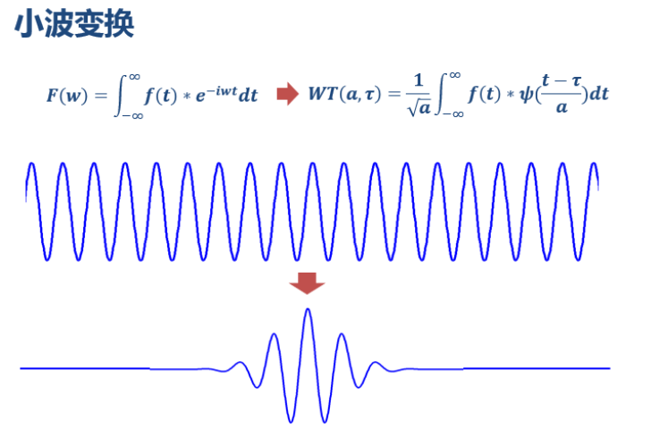
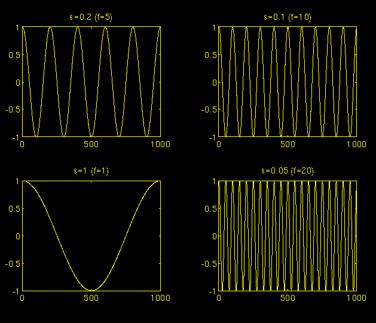
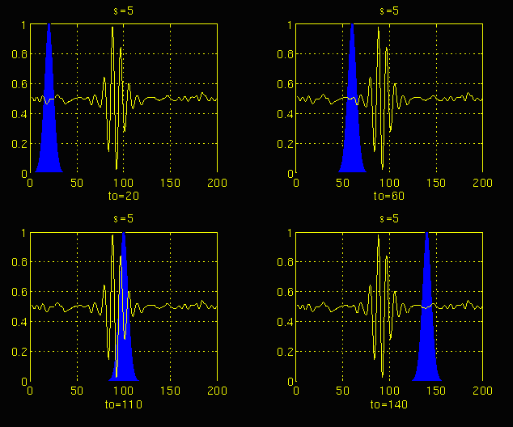
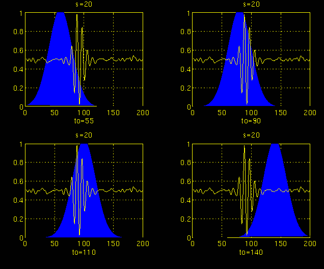

疑问
为什么图像处理中用小波变换，低频信息保存了图像的大部分信息，高频信息保存了图像的细节信息？
相关讲解
形象易懂讲解算法I——小波变换
The Wavelet Tutorial
傅里叶变换
在19世纪，法国数学家J. Fourier证明了任何周期性函数都可以表示为周期性复指数函数的无限和。在他发现了（周期性）函数的这个显著性质许多年后，他的思想被推广到了首先是非周期性函数，然后是周期性或非周期性的离散时间信号。正是在这个推广之后，它成为了计算机计算的一个非常合适的工具。1965年，出现了一种叫做快速傅里叶变换（FFT）的新算法，使得傅里叶变换（FT）变得更加流行。
现在让我们看看傅里叶变换是如何工作的：
傅里叶变换将一个信号分解为不同频率的复指数函数。它实现这一点的方式由以下两个方程定义：
在上述方程中:
- t表示时间
- f表示频率
- x表示手头的信号
- x表示时域中的信号, 而X表示频域中的信号
- 方程(1)称为x(t)的傅里叶变换，而方程(2)称为X(f)的逆傅里叶变换。
- 方程1中的指数式可以写成
上述表达式的实部是频率为f的余弦，虚部是频率为f的正弦。因此, 我们实际上是在将原始信号与一个包含频率f的正弦和余弦的复表达式相乘, 然后对该乘积进行积分。换句话说，我们是在对这个乘积的所有点进行加和。如果这个积分的结果（实际上是某种无限求和）是一个较大的值，那么我们就说：信号x(t)在频率“f”处有一个主导的谱成分。这意味着，信号的主要部分是由频率f组成的。如果积分结果是一个较小的值，那么这意味着信号中没有频率f的主导成分。如果积分结果为零，那么信号根本没有频率“f”的成分。
所以傅里叶变换处理非平稳信号有天生缺陷。它只能获取一段信号总体上包含哪些频率的成分，告诉我们某个频率成分是否存在，但是对各成分出现的时刻并不知道。因此时域相差很大的两个信号，可能频谱图一样。

做FFT后，我们发现这三个时域上有巨大差异的信号，频谱（幅值谱）却非常一致。
短时傅里叶变换
把整个时域过程分解成无数个等长的小过程，每个小过程近似平稳，再傅里叶变换，就知道在哪个时间点上出现了什么频率了。这就是短时傅里叶变换
问题是框的宽度怎么确定？
- 框太宽的话，会导致时间分辨率差(窗内的信号太短，会导致频率分析不够精准，频率分辨率差)
- 框太窄的话，会导致频率分辨率差
小波的基本原理
那么把上面的短时傅里叶变换的框的宽度改成变化的，就可以平衡时间分辨率和频率分辨率了。小波变换有着这样的思路，但小波是直接给傅里叶变换的基换了—将无限长的三角函数基换成了有限长的会衰减的小波基。这个基函数会伸缩、会平移（其实本质并非平移，而是两个正交基的分解）。

从公式可以看出，不同于傅里叶变换，变量只有频率w,小波变换有两个变量：尺度a(scale)和平移量τ(translation)。尺度a控制小波函数的伸缩，平移量τ控制小波函数的平移。尺度就对应于频率（反比），平移量τ就对应于时间。
多分辨率分析(MRA)
MRA是在不同频率下以不同分辨率分析信号。每个频谱成分的解析方式并不像短时傅里叶变换（STFT）中那样完全相同。
MRA的设计目标是在高频时提供良好的时间分辨率和较差的频率分辨率，而在低频时提供良好的频率分辨率和较差的时间分辨率。这个方法特别适用于那些信号具有短时高频成分和长时低频成分的情况。幸运的是，在实际应用中遇到的信号往往是这种类型。
尺度
就频率而言，低频（高尺度）对应于信号的全局信息（通常跨越整个信号），而高频（低尺度）对应于信号中隐藏模式的详细信息（通常持续相对较短的时间）。下图给出了对应于不同尺度的余弦信号作为示例。

较大的尺度对应于扩展（或拉伸）信号，而较小的尺度对应于压缩信号。图中给出的所有信号都来源于相同的余弦信号，也就是说，它们是相同函数的扩展或压缩版本。在上图中，s = 0.05是最小尺度，s = 1是最大尺度。
如果f(t)是给定函数，则f(st)对应于f(t)的压缩版本（如果s > 1），或者对应于f(t)的扩展版本（如果s < 1）。
连续小波变换的计算
- 平移参数（τ）和尺度参数（s）
- ψ(t) 是变换函数，称为母小波
- 母小波是生成其他窗口函数的原型,所有使用的窗口都是母小波的扩展（或压缩）和移动版本
- “平移”一词与在短时傅里叶变换（STFT）中使用的意义相同，它与窗口的位置有关，因为窗口在信号中滑动。
- 尺度=
为待分析的信号 - 一旦选择了母小波，计算从 s=1 开始，并计算所有s值的连续小波变换，包括比“1”小和大的值。
- 小波被放置在信号的起始位置，即时间为 0 的位置。尺度为“1”的小波函数与信号相乘，然后对所有时间进行积分。积分的结果将乘以常数
, 它是对应于时间尺度平面上点 τ = 0 , s = 1的值。 - 移动小波，即改变τ, 重复上述过程，直到覆盖整个信号。
- 给s增加一个小的增量，重复上述过程，直到覆盖所有尺度。


分别展示了尺度 s = 5 和 s = 20 下的相同过程。请注意，随着尺度的增加（频率的降低），窗口宽度如何变化。随着窗口宽度的增加，变换开始捕捉到较低频率的成分。
因此，对于每个尺度和每个时间（间隔），在时频平面上计算一个点。在一个尺度下的计算构成了时频平面的行，而在不同尺度下的计算构成了时频平面的列。
与在所有时间和频率上具有恒定分辨率的短时傅里叶变换（STFT）不同，小波变换（WT）在高频时具有良好的时间分辨率和较差的频率分辨率，在低频时具有良好的频率分辨率和较差的时间分辨率。

这意味着在时频平面上某个特定点的值无法被精确知道。所有落入框中的时频平面上的点都由小波变换的一个值表示。
无论框的尺寸如何，无论是STFT还是WT，所有框的面积都是相同的，并由海森堡不确定性原理确定。总结来说，每个窗口函数（STFT）或母小波（CWT）对应的框面积是固定的，而不同的窗口函数或母小波可能会导致不同的面积。
然而，所有的面积都有下界，且下界为
离散小波变换
连续小波变换（CWT）是不同尺度下的小波与信号之间的相关性, 它提供的信息是高度冗余的，这种冗余需要大量的计算时间和资源。而离散小波变换（DWT）则提供了足够的信息，既适用于原始信号的分析，也适用于合成，并且显著减少了计算时间。
在离散情况下，使用不同截止频率的滤波器来分析信号在不同尺度上的表现。信号通过一系列高通滤波器来分析高频成分，通过一系列低通滤波器来分析低频成分。
小波变换的工作流程
我们将时域信号通过各种高通和低通滤波器进行处理，这些滤波器分别去除信号中的高频或低频部分。这个过程会不断重复，每次都会去除信号中对应的某些频率部分。
下面是具体的操作过程：假设我们有一个频率高达1000 Hz的信号。在第一阶段，我们通过将信号传入高通滤波器和低通滤波器，将信号分为两部分（滤波器应满足一定的条件，称为可容忍条件），从而得到两个不同版本的信号：一个是0-500 Hz（低通部分），另一个是500-1000 Hz（高通部分）。
然后，我们选择其中一部分（通常是低通部分）或者两部分，再次进行同样的操作。这个过程称为分解。
假设我们已经获取了低通部分，现在我们有3组数据，每组对应于相同信号在不同频率范围内的信号：0-250 Hz、250-500 Hz、500-1000 Hz。
然后我们再次获取低通部分，并通过低通和高通滤波器处理；现在我们有4组信号，分别对应于0-125 Hz、125-250 Hz、250-500 Hz和500-1000 Hz的频率范围。我们继续这样做，直到将信号分解到预定义的某个层次。然后我们就得到了一些信号，这些信号实际上代表的是相同的信号，但它们分别对应不同的频率带。我们知道每个信号对应哪个频率带，如果我们将所有信号合并并绘制在一个三维图上，图的一个轴表示时间，另一个轴表示频率，第三个轴表示幅度。这样我们就可以看到在什么时间点上存在哪些频率（有一个问题，称为“不确定性原理”，它指出我们无法精确知道某一时刻存在哪些频率，我们只能知道在某一时间区间内存在哪些频率带）。
最早由海森堡发现并提出的“不确定性原理”表明，不能同时精确知道一个粒子的动量和位置。这在小波变换中也有类似的表现，具体如下：
信号在时频平面上某个特定点的频率和时间信息是无法同时知道的。换句话说：我们无法知道某个时刻存在哪些频谱成分。我们能做的最好的事情是调查在某个时间区间内存在哪些频谱成分。这是一个分辨率的问题，也是研究人员从短时傅里叶变换（STFT）转向小波变换（WT）的主要原因。STFT在所有时刻提供固定的分辨率，而WT提供的是可变的分辨率，具体如下：
高频成分在时间上的分辨率较好，而低频成分在频率上的分辨率较好。这意味着，某个高频成分可以比低频成分更精确地定位在时间上（相对误差较小）。相反，低频成分在频率上比高频成分更易于定位。
图像小波变换压缩
在图像小波变换（Wavelet Transform）中，level的数量（也称分解层数）表示：
- 对原始图像进行小波变换分解的次数。
- 每进行一次分解，图像尺寸就缩小一半（在二维图像中，每个维度减半，即整体尺寸减为原来的1/4）。
- level越大，图像被分解的尺度就越多，表示捕获了更多不同尺度（频率）上的细节和特征。
例如：
- level = 1 时：
- 图像分解为1个低频子带（LL）和3个高频子带（LH、HL、HH）。
- level = 2 时：
- 在level 1的基础上再对LL子带进行分解，产生第二层的更低频LL子带以及对应的LH、HL、HH子带。
- 更高level 时：
- 类似上述步骤，进一步对低频信息持续分解，逐渐揭示出更加宏观、抽象的信息。
实际含义：
- 较低的level通常用于捕捉图像的细节特征。
- 较高的level通常用于捕捉图像的整体趋势或全局特征。
因此，选择合适的level数量需根据图像分析或处理的目标来确定，通常不超过图像尺寸能够支撑的最大分解层数。
最大分解层数
图像每进行一次小波分解，尺寸（每个维度）减半，因此设图像尺寸为：
- 高度：
- 宽度：
那么最大分解层数（level）为：
- 表示图像宽度与高度中较小的值。
- 为向下取整函数。
📌举个例子：
假设图像尺寸为 ：
- 最大level数 =
因此，该图像最多支持8级小波分解，但通常不会达到最大分解层数。